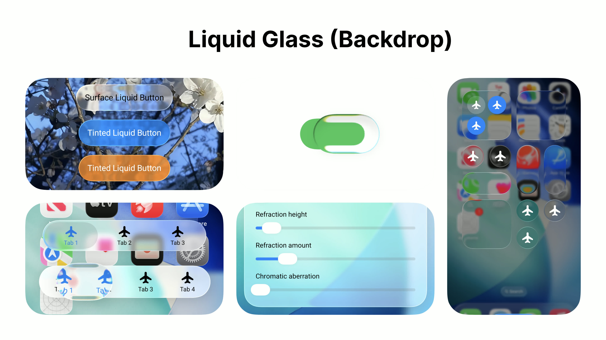
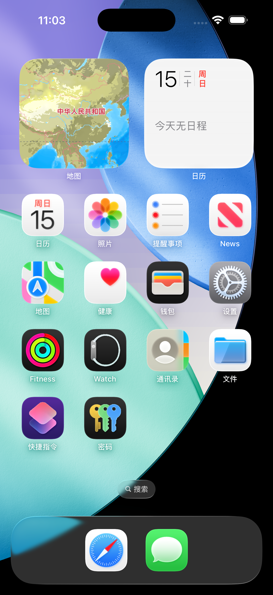
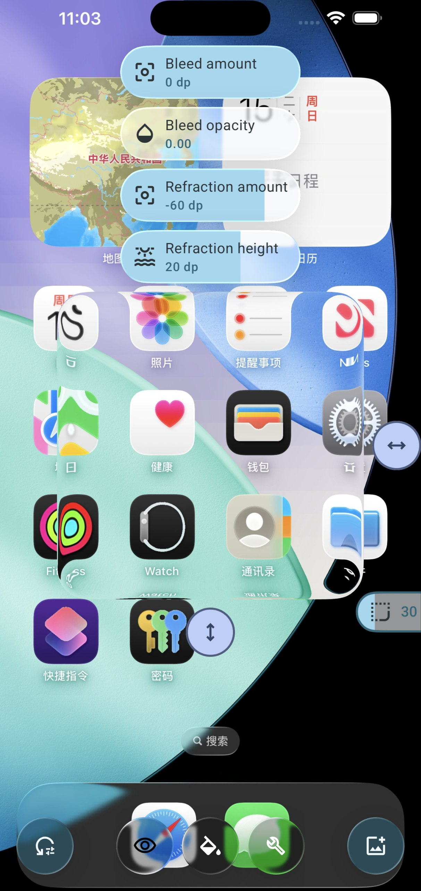
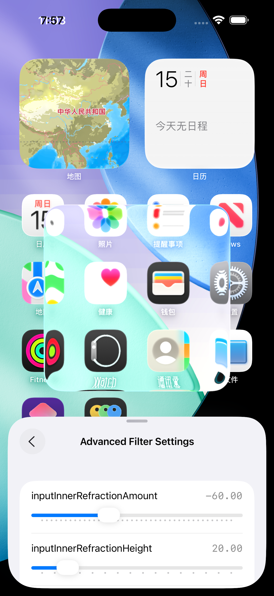

性能优化
16 品牌独立分类（小米/华为/vivo/iQOO…），Root/ADB 分行优化。
- 通用 26 条 + 华为 30 条真实命令
- 命令执行后回读验证，失败按错误码分类
- 一键还原全部系统默认（47 键 + 27 组件）
面向自有设备的 Android 系统工具箱——不用电脑也能性能调优、按游戏改帧率、插件/模块管理、系统还原、安全护盾与内核级提权。
核心纪律：所有系统级命令真实执行并回读验证；删除与破坏性操作永远由你逐条确认，应用绝不自动执行。

全部功能基于真实命令执行与回读验证，不做假成功。
16 品牌独立分类（小米/华为/vivo/iQOO…），Root/ADB 分行优化。
全局刷新率最高 165Hz，按游戏单独配置帧率。
终端、Shell 执行器、ADB 面板与插件模块管理。
Root 全盘扫描恶意脚本，删除必须逐条确认。
内置 68 个 vivo 内核偏移表 + arm64 GhostLock 原生二进制。
首次设置向导 + 三套主题 + 玻璃参数调节。
六张官方素材：内折射、色散、Fresnel 高光，全部来自应用实机渲染。





下载链接从 GitHub Releases 自动同步，指向真实文件。
正式签名（versionCode 31），推荐下载。功能：16 品牌性能优化 / 165Hz 游戏帧率 / 安全护盾 / 68 偏移表内核提权。
背景透射、动态折射、RGB 色散、Fresnel 边缘高光——本站的玻璃效果由 Canvas2D 真实合成，纯 backdrop-filter 仅作为无 JS 兜底。
玻璃卡内绘制的是背景放大采样的实时折射层，带正弦波动态形变；绝不是一张半透明贴图。
红/蓝通道错位合成，玻璃边缘出现真实色差，与素材图一致。
构建时脚本调用 GitHub Releases API，静态生成版本数据；Token 只存在于构建机，不进浏览器不落公开仓库。
折射强度 / 位移 / 色散 / 边缘高光 / 阴影 / 透明度 / 光线方向 — 全部由 CSS 变量统一管理（--lg-refraction / --lg-dispersion / --lg-edge-highlight / --lg-inner-shadow / --lg-lift / --lg-light-angle）。
护盾扫描、还原、删除——一律"列出 → 你确认 → 才执行"。
每条命令失败按 15+ 错误码分类并保留原始 stderr。
偏移表 + 原生二进制 + 执行 + uid=0 判定，表外内核按设计拒绝。